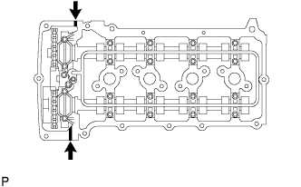

РАСПРЕДВАЛ > УСТАНОВКА |
| 1. УСТАНОВИТЕ ЗУБЧАТОЕ КОЛЕСО РАСПРЕДВАЛА В СБОРЕ |
 |
Совместите отверстие под штифт и стопорный штифт и установите зубчатое колесо распредвала на распредвал.
| *1 | Стопорный штифт |
| *2 | Отверстие для поршневого пальца |
Слегка прижмите зубчатое колесо к распредвалу и вращайте колесо. Продвиньте колесо дальше, чтобы штифт вошел в канавку.
Убедитесь, что между фланцем зубчатого колеса и распредвалом нет зазора.
Зафиксировав зубчатое колесо распредвала на месте, вверните болт фланца.
Убедитесь, что зубчатое колесо распредвала может вращаться в сторону запаздывания и фиксируется в положении максимального запаздывания.
| 2. УСТАНОВИТЕ МЕХАНИЗМ РЕГУЛИРОВКИ ЗАЗОРА В ПРИВОДЕ КЛАПАНА В СБОРЕ |
Перед установкой каждого механизма регулировки зазора в приводе клапана обязательно проверяйте его (Нажмите здесь).
Установите 16 механизмов регулировки зазора в приводе клапана на головку блока цилиндров.
| 3. УСТАНОВИТЕ РЫЧАГ ПРИВОДА КЛАПАНА № 1 В СБОРЕ |
 |
Нанесите слой чистого моторного масла на выступы механизма регулировки зазора в приводе клапана и поверхности колпака штока клапана.
Установите 16 рычагов приводов клапанов, как показано на рисунке.
| *1 | Колпак штока клапана |
| *2 | Рычаг привода клапана |
| *3 | Механизм регулировки зазора в приводе клапана |
| *a | ПРАВИЛЬНО |
| *b | НЕПРАВИЛЬНО |
| 4. УСТАНОВИТЕ РАСПРЕДВАЛ |
Смажьте кулачки распредвала и шейки головки блока цилиндров чистым моторным маслом.
Совместите нанесенную краской метку звена с установочной меткой на зубчатом колесе распредвала и установите цепной привод газораспределительного механизма на зубчатое колесо распредвала.
| *1 | Метка, нанесенная краской |
| *2 | Установочная метка |
 |
Расположите 2 распредвала, как показано на рисунке.
|
| *1 | Колпак штока клапана |
| *2 | Рычаг привода клапана |
| *3 | Механизм регулировки зазора в приводе клапана |
| *a | ПРАВИЛЬНО |
| *b | НЕПРАВИЛЬНО |
 |
Временно установите крышку подшипника распредвала № 1.
Определите правильное положение каждой крышки подшипника распредвала и установите их.
 |
Установите новое кольцевое уплотнение на крышку подшипника распредвала № 1.
| *1 | Кольцевое уплотнение |
Временно закрепите маслоподводящую трубку.
 |
Вверните 21 болт и затяните их в порядке, показанном на рисунке.
| 5. УСТАНОВИТЕ ЗВЕЗДОЧКУ РАСПРЕДВАЛА |
Поверните распредвал таким образом, чтобы установочная метка распредвала и штифт распредвала № 2 располагались, как показано на рисунке.
| *1 | Установочная метка |
| *2 | Штифт |
| *3 | Канавка |
Проверните шкив коленчатого вала и совместите метку на нем с установочной меткой "0" на крышке цепного привода газораспределительного механизма.
Установите цепной привод газораспределительного механизма на звездочку распредвала, совместив нанесенную краской метку с установочными метками на звездочке распредвала.
| *1 | Метка, нанесенная краской |
| *2 | Установочная метка |
Совместите штифт распредвала № 2 и отверстие для штифта в звездочке распредвала. Затем установите звездочку распредвала на распредвал № 2.
 |
Удерживая распредвал гаечным ключом, затяните болт звездочки.
| *a | Удерживайте |
| *b | Затяните |
Извлеките шестигранный гаечный ключ из натяжителя цепи.
Нанесите герметик на 2-3 витка резьбовой заглушки.
С помощью торцевого шестигранного ключа на 10 мм установите резьбовую заглушку.
| 6. УСТАНОВИТЕ НАПРАВЛЯЮЩУЮ ЦЕПНОГО ПРИВОДА ГАЗОРАСПРЕДЕЛИТЕЛЬНОГО МЕХАНИЗМА |
 |
Установите новое кольцевое уплотнение на крышку подшипника распредвала.
| *1 | Кольцевое уплотнение |
Установите направляющую цепного привода и закрепите ее 2 болтами.
| 7. УСТАНОВИТЕ КРЫШКУ ГОЛОВКИ БЛОКА ЦИЛИНДРОВ В СБОРЕ |
|  |
Установите 2 новые прокладки крышки на крышку головки блока цилиндров.
Нанесите герметик Seal Packing в местах, показанных на рисунке.
 | Герметик |
 |
Временно закрепите крышку головки блока цилиндров 19 болтами и 2 гайками.
Равномерно затяните 19 болтов и 2 гайки в порядке, указанном на рисунке.
Убедитесь, что болты 1-8 затянуты с заданным крутящим моментом, проверив их по порядку номеров. Затяните болты согласно требованиям.
| 8. УСТАНОВИТЕ ДАТЧИК ПОЛОЖЕНИЯ РАСПРЕДВАЛА |
 |
Нанесите тонкий слой моторного масла на кольцевое уплотнение датчика положения распредвала.
| *1 | Кольцевое уплотнение |
Установите датчик положения распредвала и закрепите его болтом.
Подсоедините разъем датчика положения распредвала.
| 9. УСТАНОВИТЕ КАТУШКУ ЗАЖИГАНИЯ В СБОРЕ |
Установите 4 катушки зажигания и закрепите их 4 болтами.
Подсоедините разъемы 4 катушек зажигания.
| 10. УСТАНОВИТЕ КОЖУХ ВЕНТИЛЯТОРА |
Установите шкив вентилятора на насос системы охлаждения.
Поместите кожух вместе с вентилятором вискомуфты между радиатором и двигателем.
Установите вентилятор вискомуфты на насос системы охлаждения и предварительно закрепите его 4 гайками. Затяните гайки вручную до упора.
 |
Присоедините захваты кожуха к радиатору, как показано на рисунке.
Закрепите кожух 2 болтами.
Установите поликлиновой ремень вентилятора и генератора (Нажмите здесь).
Затяните 4 гайки вентилятора вискомуфты.
 |
Введите в зацепление захват, чтобы сомкнуть зажим гибкого шланга, как показано на рисунке.
| 11. УСТАНОВИТЕ РАСШИРИТЕЛЬНЫЙ БАЧОК РАДИАТОРА |
Установите расширительный бачок радиатора и закрепите его 3 болтами.
Подсоедините шланг бачка к радиатору.
| 12. УСТАНОВИТЕ СОЕДИНИТЕЛЬ ВПУСКА ВОЗДУХА |
Закрепите соединитель впуска воздуха 3 болтами.
Затяните хомут шланга.
Подсоедините вакуумный шланг.
Закрепите зажим жгута проводов.
Отсоедините шланг вентиляции картера № 2.
| 13. УСТАНОВИТЕ КРЫШКУ ВОЗДУШНОГО ФИЛЬТРА В СБОРЕ |
 |
Установите шланг воздушного фильтра, совместив его метку с меткой крышки воздушного фильтра, как показано на рисунке.
| *1 | Метка |
| *a | Верхняя сторона |
| *b | Передняя сторона |
Затяните хомут шланга.
Введите в зацепление 4 зажима.
Закрепите провод соединения с массой и зажим с помощью болта.
Подсоедините разъем датчика массового расхода воздуха и закрепите 3 зажима.
| 14. ПОДСОЕДИНИТЕ ПРОВОД К ОТРИЦАТЕЛЬНОМУ ВЫВОДУ АККУМУЛЯТОРНОЙ БАТАРЕИ |
| 15. ЗАЛЕЙТЕ МОТОРНОЕ МАСЛО |
Очистите и установите пробку для слива масла с новой прокладкой.
Добавьте свежее моторное масло.
| Класс масла по степени вязкости | Вязкость масла (SAE) |
| Универсальное моторное масло API сорт SL "Energy-Conserving", SM "Energy-Conserving" или ILSAC. |
|
| Универсальное моторное масло API сорт SL или SM |
|
| Наименование | Заданные условия |
| Слив и заполнение без замены масляного фильтра | 5,0 литра (5,3 кварты США, 4,4 английской кварты) |
| Слив и заполнение с заменой масляного фильтра | 5,7 литра (6,0 кварты США, 5,0 английской кварты) |
| Заполнение сухой системы | 6,1 литра (6,4 кварты США, 5,4 английской кварты) |
Установите крышку маслоналивной горловины.
| 16. ПРОВЕРЬТЕ, НЕТ ЛИ УТЕЧЕК МАСЛА |
Запустите двигатель. Убедитесь, что в узлах, в которых выполнялись работы, нет утечек масла.
| 17. ПРОВЕРЬТЕ УРОВЕНЬ МОТОРНОГО МАСЛА |
Прогрейте двигатель, затем остановите его и подождите 5 минут.
Убедитесь, что уровень масла находится между отметками низкого и максимального уровней на щупе проверки уровня масла.
Если уровень масла находится на низком уровне, убедитесь в отсутствии утечек моторного масла и долейте масло до максимальной отметки.
| 18. ПРОВЕРЬТЕ УГОЛ ОПЕРЕЖЕНИЯ ЗАЖИГАНИЯ |
Прогрейте и выключите двигатель.
Если используется портативный диагностический прибор:
Подсоедините портативный диагностический прибор к DLC3.
Запустите двигатель и оставьте его работать на холостом ходу.
Включите портативный диагностический прибор.
Войдите в следующие меню: Powertrain / Engine and ECT / Data List / IGN Advance.
Убедитесь в том, что угол опережения зажигания возрастает сразу после увеличения частоты вращения коленчатого вала двигателя.
Войдите в следующие меню: Powertrain / Engine and ECT / Active Test / Connect the TC and TE1.
Определите значение IGN Advance.
Выполните диагностику в режиме Active Test.
Если портативный диагностический прибор не используется:
Ослабьте хомут шланга со стороны корпуса дроссельной заслонки.
Выверните 3 болта и отсоедините соединитель впуска воздуха.
Подсоедините щуп стробоскопа к проводу разъема катушки зажигания, идущему к цилиндру № 1.
Подсоедините соединитель впуска воздуха.
Запустите двигатель и оставьте его работать на холостом ходу.
 |
С помощью SST соедините контакты 13 (TC) и 4 (CG) на DLC3.
| *a | Вид спереди разъема DLC3 |
С помощью стробоскопа проверьте угол опережения зажигания.
Отсоедините SST от DLC3.
Проверьте установку угла опережения зажигания.
Убедитесь в том, что угол опережения зажигания возрастает сразу после увеличения частоты вращения коленчатого вала двигателя.
Выключите зажигание.
Отсоедините стробоскоп от двигателя.
Подсоедините соединитель впуска воздуха с помощью 3 болтов.
Затяните хомут шланга.
| 19. ПРОВЕРЬТЕ ЧАСТОТУ ВРАЩЕНИЯ КОЛЕНЧАТОГО ВАЛА ДВИГАТЕЛЯ НА ХОЛОСТОМ ХОДУ |
Прогрейте и выключите двигатель.
Если используется портативный диагностический прибор:
Подсоедините портативный диагностический прибор к DLC3.
Запустите двигатель и оставьте его работать на холостом ходу.
Включите портативный диагностический прибор.
Войдите в следующие меню: Powertrain / Engine and ECT / Data List / Engine Speed.
Выключите зажигание.
Отсоедините портативный диагностический прибор от DLC3.
Если портативный диагностический прибор не используется:
| *a | Вид спереди разъема DLC3 |
С помощью SST подключите щуп тахометра к контакту 9 (TAC) на DLC3.
Проверьте частоту вращения на холостом ходу.
Отсоедините щуп тахометра от DLC3.
Если частота вращения коленчатого вала не соответствует заданной, обновите значение параметра настройки регулировки частоты вращения холостого хода (ISC) с помощью описанной ниже процедуры 1 или 2, а затем снова проверьте частоту вращения коленчатого вала.
Процедура 1:
После полного прогрева двигателя двигайтесь на автомобиле со скоростью 30 км/час (19 миль в час) в течение 30 с или более и дайте поработать двигателю на холостом ходу в течение не менее 30 с. Повторите эту процедуру не менее 5 раз.

| *a | Двигатель полностью прогрет | *b | Скорость автомобиля - 30 км/час (19 миль в час) |
| *c | Холостой ход | *d | 1 раз |
Процедура 2:
После полного прогрева остановите двигатель, а затем включите его на холостом ходу. Повторите эту процедуру не менее 5 раз.
| *a | Двигатель полностью прогрет | *b | Двигатель остановлен |
| *c | Двигатель запущен | *d | Холостой ход |
| *e | 1 раз | - | - |
| 20. УСТАНОВИТЕ ВЕРХНЕЕ УПЛОТНЕНИЕ КРОНШТЕЙНА РАДИАТОРА |
Установите верхнее уплотнение кронштейна радиатора и закрепите его 13 фиксаторами.
| 21. УСТАНОВИТЕ ЗАЩИТУ КАРТЕРА ДВИГАТЕЛЯ № 1 В СБОРЕ |
 |
Присоедините защиту картера двигателя к кузову автомобиля, как показано на рисунке.
Вверните 4 болта.
| 22. УСТАНОВИТЕ НИЖНЮЮ НАКЛАДКУ ПЕРЕДНЕГО БАМПЕРА |
Установите нижнюю облицовку переднего бампера и закрепите ее 5 болтами и фиксатором.